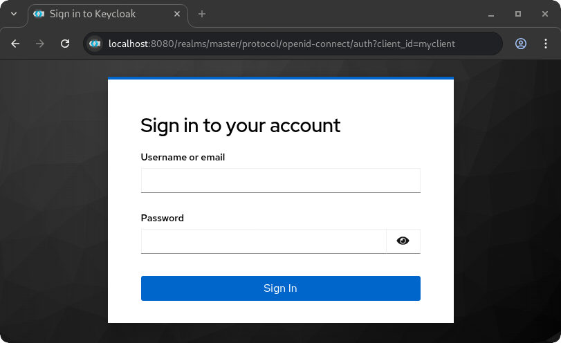
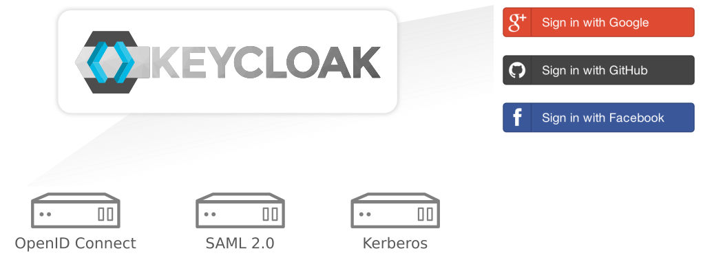
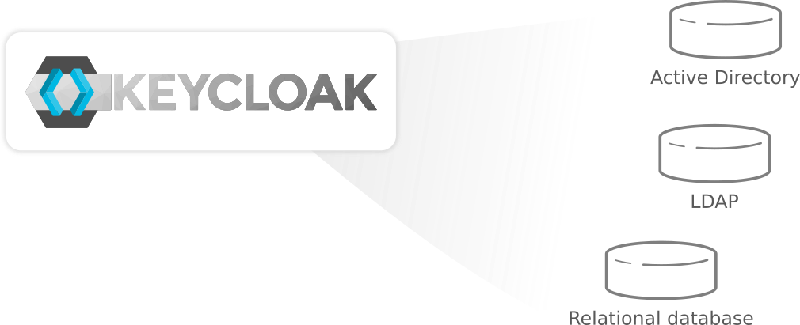
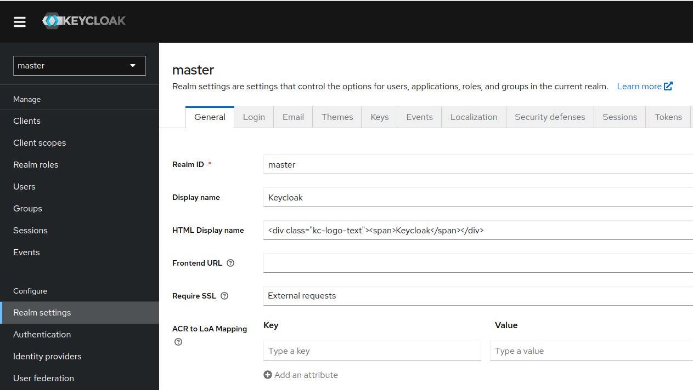
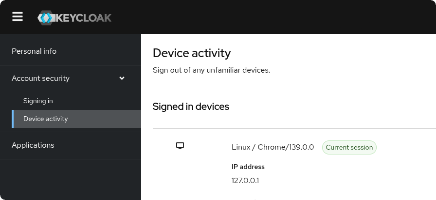

About
Keycloak is an open source Identity and Access Management solution aimed at modern applications and services. It makes it easy to secure applications and services with little to no code.
This page gives a brief introduction to Keycloak and some of the features. For a full list of features refer to the documentation.
Trying Keycloak is quick and easy. Take a look at the Getting Started tutorial for details.
Single-Sign On
Users authenticate with Keycloak rather than individual applications. This means that your applications don't have to deal with login forms, authenticating users, and storing users. Once logged-in to Keycloak, users don't have to login again to access a different application.
This also applied to logout. Keycloak provides single-sign out, which means users only have to logout once to be logged-out of all applications that use Keycloak.
Kerberos bridge
If your users authenticate to workstations with Kerberos (LDAP or active directory) they can also be automatically authenticated to Keycloak without having to provide their username and password again after they log on to the workstation.
Identity Brokering and Social Login
Enabling login with social networks is easy to add through the admin console. It's just a matter of selecting the social network you want to add. No code or changes to your application is required.
Keycloak can also authenticate users with existing OpenID Connect or SAML 2.0 Identity Providers. Again, this is just a matter of configuring the Identity Provider through the admin console.
User Federation
Keycloak has built-in support to connect to existing LDAP or Active Directory servers. You can also implement your own provider if you have users in other stores, such as a relational database.
Client Adapters
Keycloak Client Adapters makes it really easy to secure applications and services. We have adapters available for a number of platforms and programming languages, but if there's not one available for your chosen platform don't worry. Keycloak is built on standard protocols so you can use any OpenID Connect Resource Library or SAML 2.0 Service Provider library out there.
Gatekeeper
You can also opt to use a proxy to secure your applications which removes the need to modify your application at all.
Admin Console
Through the admin console administrators can centrally manage all aspects of the Keycloak server.
They can enable and disable various features. They can configure identity brokering and user federation.
They can create and manage applications and services, and define fine-grained authorization policies.
They can also manage users, including permissions and sessions.
Account Management Console
Through the account management console users can manage their own accounts. They can update the profile, change passwords, and setup two-factor authentication.
Users can also manage sessions as well as view history for the account.
If you've enabled social login or identity brokering users can also link their accounts with additional providers to allow them to authenticate to the same account with different identity providers.
Standard Protocols
Keycloak is based on standard protocols and provides support for OpenID Connect, OAuth 2.0, and SAML.
Authorization Services
If role based authorization doesn't cover your needs, Keycloak provides fine-grained authorization services as well. This allows you to manage permissions for all your services from the Keycloak admin console and gives you the power to define exactly the policies you need.